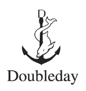

Pantheon Books

Pantheon Books is an American book publishing imprint with editorial independence founded in 1942. It is part of the Knopf Doubleday Publishing Group, under the parent company Random House. The current editor-in-chief at Pantheon Books is Dan Frank.
Bertelsmann, the German company that also owns Bantam Books, Doubleday Publishing, Dell Publishing, Times Books, the Modern Library, Everyman's Library, Vintage Books, Crown Publishing Group, Schocken Books, Ballantine Books, Del Rey Books, Fawcett Publications also acquired Random House in 1998, making Bertelsmann the largest publisher of American books.
In addition to classics, international fiction, and trade paperbacks, recently Pantheon has moved aggressively into the comics market. It has published many critically acclaimed graphic novels and comics collections, including Ice Haven, La Perdida, Read Yourself RAW, Maus, In the Shadow of No Towers, and Black Hole. Many of its comics publications are high-quality collected editions of works originally serialized by other publishers such as Fantagraphics Books.
Comics and graphic novels
The "...for Beginners" series of comics:
- Go for Beginners by Kaoru Iwamoto and Ishi Press (1976) ISBN 0394733312
- Lenin for Beginners by Richard Appignanesi and Oscar Zarate (1978)
- Freud for Beginners by Richard Appignanesi and Oscar Zarate (1979)
- Trotsky for Beginners by Tariq Ali (1980)
- Ecology for Beginners by Stephen Croall and William Rankin (1981)
- Marx's Kapital for Beginners by David N. Smith, and Phil Evans, and Karl Marx (1982)
- Nuclear Power for Beginners by Stephen Croall and Kaianders Sempler (1983)
- Economists for Beginners by Bernard Canavan (1983)
Habibi (2011)
Love is Hell by Matt Groening (1985)
Maus I: A Survivor's Tale: My Father Bleeds History by Art Spiegelman (1986)
Read Yourself RAW by Art Spiegelman and Françoise Mouly (1987)
School is Hell: A Cartoon Book by Matt Groening (1987)
Childhood is Hell: A Cartoon Book" by Matt Groening (1988)
The Big Book of Hell: A Cartoon Book by Matt Groening (1990)
Maus II: A Survivor's Tale: And Here My Troubles Began by Art Spiegelman (1991)
Love is Still Hell: A Cartoon Book by Matt Groening (1994)
The Jew of New York by Ben Katchor (1998)
Ethel & Ernest by Raymond Briggs (1998)
David Boring by Daniel Clowes (2000)
Jimmy Corrigan: The Smartest Kid on Earth by Chris Ware (2000)
Julius Knipl, Real Estate Photographer: The Beauty Supply District by Ben Katchor (2000)
In the Floyd Archives: A Psycho-Bestiary by Sarah Boxer (2001)
Persepolis by Marjane Satrapi (2003)
In the Shadow of No Towers by Art Spiegelman (2004)
Persepolis II by Marjane Satrapi (2004)
Amy and Jordan by Mark Beyer (2004)
Black Hole by Charles Burns (2005)
Embroideries by Marjane Satrapi (2005)
Epileptic by David Beauchard (2005)
Ice Haven by Daniel Clowes (2005)
The Rabbi's Cat by Joann Sfar (2005)
Chicken with Plums by Marjane Satrapi (2006)
La Perdida by Jessica Abel (2006)
A Scanner Darkly by Philip K. Dick, adapted by Richard Linklater (2006)
Alias the Cat! by Kim Deitch (2007)
Breakdowns: Portrait of the Artist as a Young %@*! by Art Spiegelman (2008)
My Brain Is Hanging Upside Down by David Heatley (2008)
Asterios Polyp by David Mazzucchelli (2009)
A.D.: New Orleans After the Deluge by Josh Neufeld (2009)
The Cardboard Valise by Ben Katchor (2011)
My Brother's Husband by Gengoroh Tagame (2014)